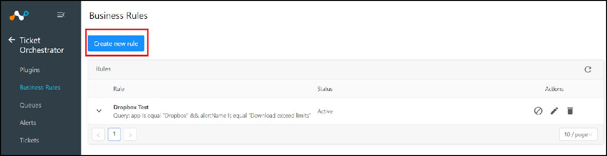
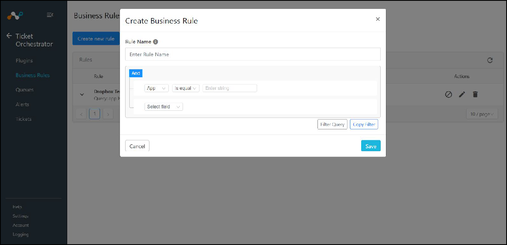
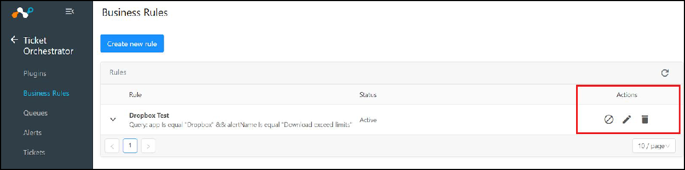
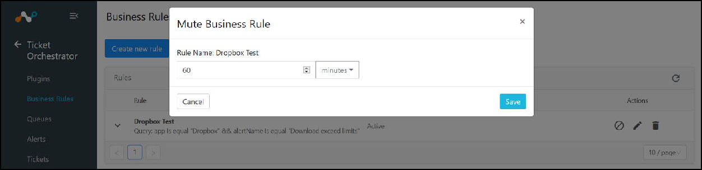
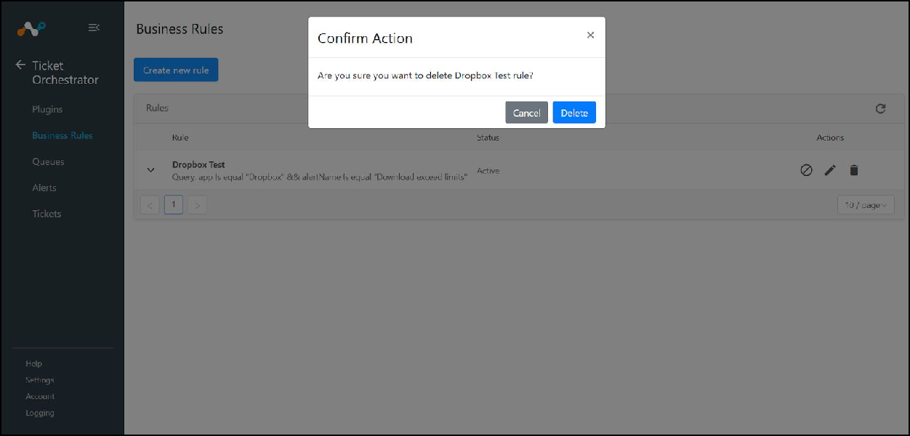
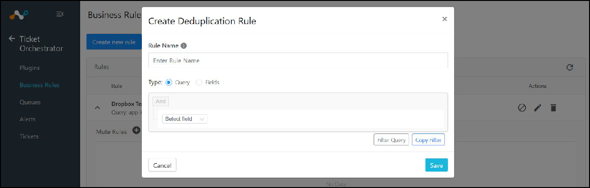
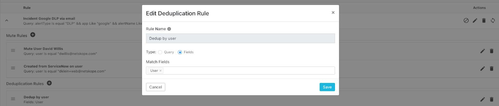
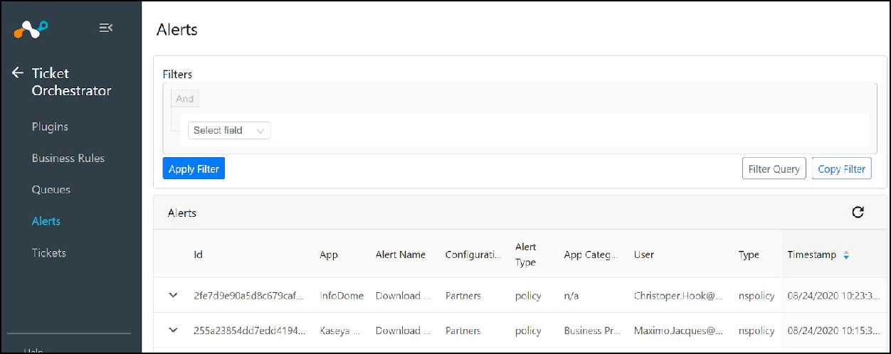
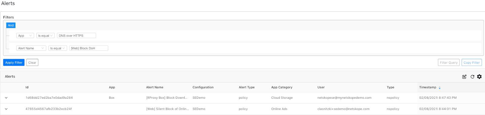
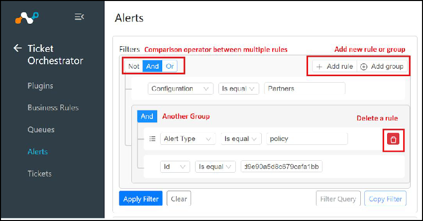

Manage Ticket Orchestrator Business Rules
Only Admins can manage business rules.
Create Ticket Orchestrator Business Rules
Admin can configure Ticket Orchestrator (TO) queries towards Netskope tenant(s) as business rules, allowing the user to specify which alerts to be used by TO to trigger ticket creation.
Go to Business Rules.
Click on Create new rule and enter a rule name.
Select or enter a query in the alert filter. At least one filter must be selected.
Tip
Filters can be copied from the alert table and applied to a business rule.
 Click Save.

Perform Actions on Ticket Orchestrator Business Rules
Admins can manage all the business rules from a single place on the Business Rules page, like mute one or multiple business rules, edit the query for business rules, or delete the business rules from this page.
|  |
Mute a Business Rule
Muting can be used to temporarily ignore any new alerts that would normally generate a ticket workflow.
|  |
Delete a Ticket Orchestrator Business Rule
To delete a business rule, select the Delete (trash) icon on the rule, and then confirm the action.
|  |
Add or Delete Muting Rules to Ticket Orchestrator Business Rules
This function is used to filter known and acknowledged activities so that new tickets are NOT created using a match criterion. For example, an Admin can mute a particular user so that new tickets for the Dropbox tests would not be opened when that user was attached to the alert.
Add or Edit Deduplicate Rules to Ticket Orchestrator Business Rules
You can add deduplication rules or mute deduplication rules to the business rules to deduplicate all the matching alerts into a single ticket on the target platform. Create a rule using a query for a specific match or use fields for a more generic approach to matching on anything associated with that field. For all the matching alerts, only a single ticket will be created and updated.
|  |
Duplicated rules can also be edited.
|  |
Copy Filters from the Alert Table and Apply to a Ticket Orchestrator Business Rule
Both Admins and Users can copy a filter for a business rule. TO maintains the database of Alerts captured from configured plugins. Users can list the available Alerts, view the metadata and filter the Alerts.
Go to Alerts. The Alerts page shows all alerts matching any configured filter in the plugin configuration. The list is paginated with a default alert display count of 10. The records are sorted in descending order of alert timestamp from most to least recent occurrence.
 An Admin can create a negative filter by selecting Not in the upper left hand corner. For more than one filter criteria, move the mouse to the upper right of the filter box to see and select the Add rule option.
 Next, select the appropriate comparison operator And / Or by moving the mouse over the And button in the upper left, creating a multi-variable match as shown in the screenshot below. Individual rules can be deleted by clicking on the red trash icon to the right of the rule.
 For alternative multi-data criteria, select Add group. Rules will be processed from top to bottom.
Click Clear to remove the custom filter; the UI will fall back to the default filter and Alerts matching the default filter will be listed as the screen refreshes.
After selecting the desired filter, click Apply Filter. Alerts matching the filtering criteria will be listed.
Users can copy the filter string so it can be used as a filter query in the plugin configuration.
Also users can enter the filter query manually and can load the filters according to the query.

Expand row functionality in table by clicking on the down carrot to see more detail about individual alerts.

Create Ticket Orchestrator Business Rules from Filtered Alerts
Admins can create business rules from the Alerts page when the filter is applied. A business rule based on the filtered query will be created when the File Plus icon is clicked.
 |
 |